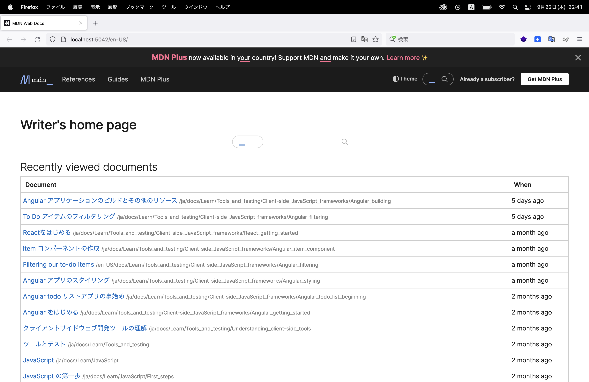

3-2.ローカルで編集をする
原文はこちら：setup
こちらも参考に：MDN Web Docs ドキュメント翻訳の始め方
前ページで fork したリポジトリ を clone してローカルに置きます。
- ※最新のmainブランチを取り込んでいる状態にします（前ページを参照）
- 例：/Users/path/to/repos/mdn/content
- 例：/Users/path/to/repos/mdn/translated-content
ターミナルで、以下のコマンドを実施します
$ cd /Users/path/to/repos/mdn/content # 以下、yarn コマンドが使える環境である必要があります。yarn の使い方が分からなければSlackで聞いてください。 $ yarn install # .env ファイルを作成 # CONTENT_TRANSLATED_ROOT={translated-contentリポジトリ内のfilesディレクトリ} # 例：/Users/path/to/repos/mdn/translated-content/files $ content git:(main) cat .env CONTENT_TRANSLATED_ROOT=/Users/path/to/repos/mdn/translated-content/files # http://localhost:5042 にアクセス $ yarn startMDN の Writer's home page が表示されます🎉
http://localhost:5042/ja/ に行き、翻訳したい該当ページを開いておきます
- 実際にはページが存在しているのに、初回アクセス時に Page not found となる場合があります
- その場合はブラウザでページをリロードすれば表示されます
- 3−1で clone していた mdn/translated-content をエディタで開き、翻訳したい該当ファイルを編集します
- または、http://localhost:5042/ja/ の該当ページから［Open in your editor］ボタンで該当ファイルをエディタで開くことができます
- 編集すると、http://localhost:5042/ja/ の該当ページが更新されますので、確認しながら編集を行います
※ ［Open in your editor］ボタンからエディタを開く場合、3-2 で作った .env ファイルに使用するエディタを指定しておくことができます。
例：EDITOR=code （VSCodeで開きたい場合）
翻訳するページのファイルがなく、追加する場合
- まず、自分のブランチで作業していることを確認します。
- PR作業用にトピックブランチを作成します。
# コマンドで、自分が作業しているブランチが * 付きで表示されます。 git branch -a # ↓ ブランチ名は自由ですが、作成したissue番号などでもよいです。 git checkout -b issue-123 - 翻訳対象になるファイルを、en-US から ja にコピーします。階層内の位置を、en-US と同じにしてください。
- 翻訳を進めます。 ※前のページと同じように、対象ファイルを編集。
# 編集したファイルを、git の管理対象に加え、 git add files/ja/folder/you/added # コミット git commit # github上のリポジトリに反映します。 git push origin issue-123 - プルリクエストを作成し、MDNのリポジトリに反映を要請します。